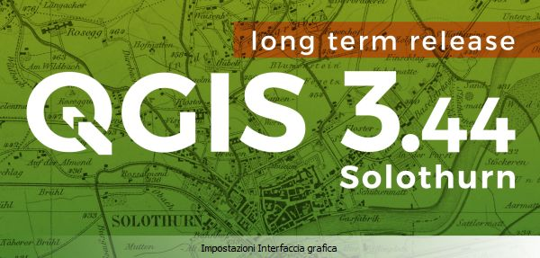
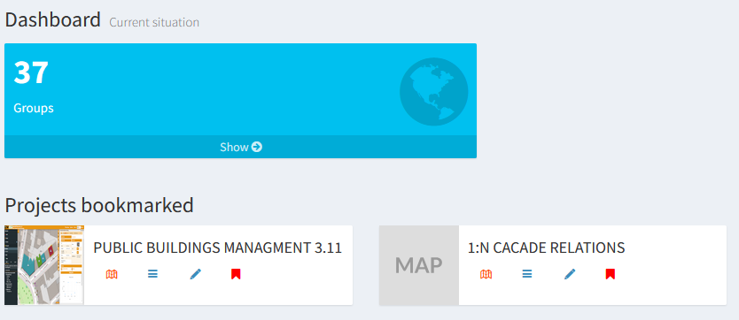
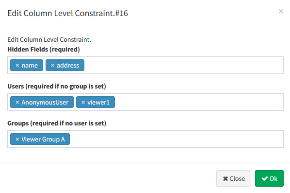
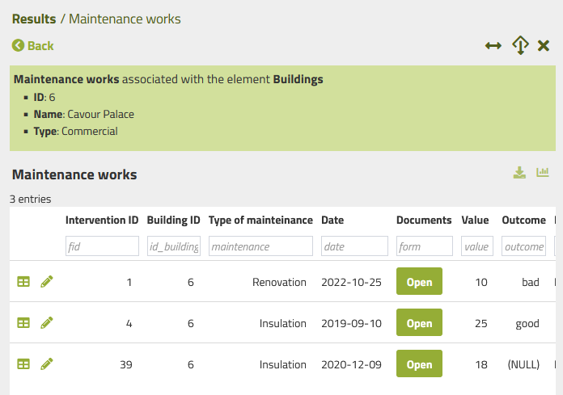
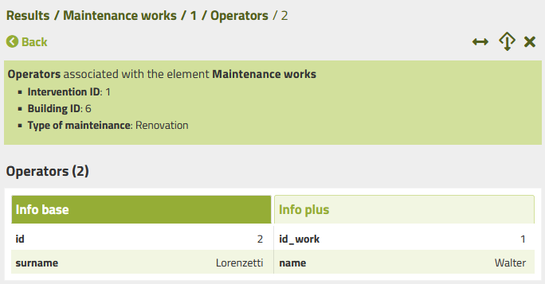
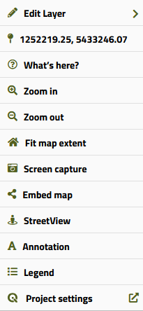
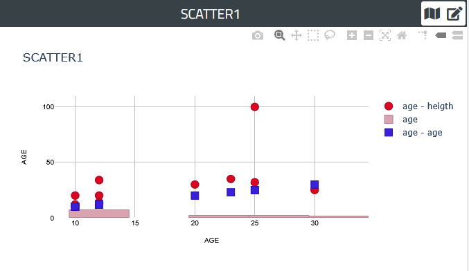

Changelog G3W-Suite 3.11
Release date: 08 April 2026
Changelog for G3W-SUITE 3.11
Version 3.11 of G3W-SUITE is characterized by a great refactoring job��.
Among the main innovations we also remember:
- QGIS 3.44 LTR compatibility
- >90% reduction in the total number of files
- >90% reduction in compilation time
- ability to test changes “live” directly on a remote server (few substantial differences between evelopment and production environments)
- increasingly “plug-and-play” architecture, meaning extensibility comes first (stable code = if it is easily modifiable via plugins/code snippets, without touching the core)
- new integrations with the QGIS API
- user experience at the heart of everything (the “simpler” the code, the “cleaner” the graphical interface)
- and much more�.
We hope you enjoy this great work!
Happy mapping with G3W-SUITE!
Sponsor and funder
G3W-SUITE is an open source project and if you are able to, consider supporting our work through donations or contributions to the code documentation, web site and so on.
Among the main funder of this version we remember:


General
Feature: QGIS 3.44 LTR compatibility
G3W-SUITE 3.11 is compatible with the new 3.44 LTR of QGIS
Take advantage of all the news related to the preparation of QGIS projects with the new LTR version

Administration
Feature: Bookmark Projects
You can now create bookmarks for your favorite projects so they always appear on top of your admin session dashboard.

Feature: Managing filters on fields
A simpler system for managing filters on attribute fields based on users or user groups.
The filter setting is aligned with the modes used for the other widgets.

Cartographic client and interaction with the map
Feature: Increased user experience
Numerous changes to the client interface.
Improved management of all features without disrupting the end user experience.

Feature: 1:N relation parent information
References to the parent are visible when accessing the list of records in the child layer of a 1:N relation.
This function can also be set for cascading 1:N relations.

Feature: Breadcrump improvment
A reorganization of breadcrumbs allows you to better manage situations with multiple caching relationships

Feature: Right click option
A right click on the mouse allows you to access a series of functions related (but not limited to) to the point where you click

Editing on line
Feature: Rotate features
The feature rotation function has been added to the editing tools.
The rotation of point geometries is linked to the presence of a field called “rotation” in the attribute table, on which the direction of the symbology associated with the point is based
Searches
Feature: Elastic Search
A new search tool based on Elasticsearch technology has been added.
This tool allows you to perform comprehensive searches based on a subset of the project layers, simplifying the use by the user.
Charts
G3W-SUITE allows you to associate interactive graphics created on QGIS with the DataPlotly plugin to various WebGis services.
Feature: Multiple charts management
With the new version it is possible to merge multiple graphs from the DataPlotly plugin to create multiple overlapping graphs

Complete list of improvements
Feature: Admin
Feature: Client
For complete details, see the official ReadTheDocs documentation.